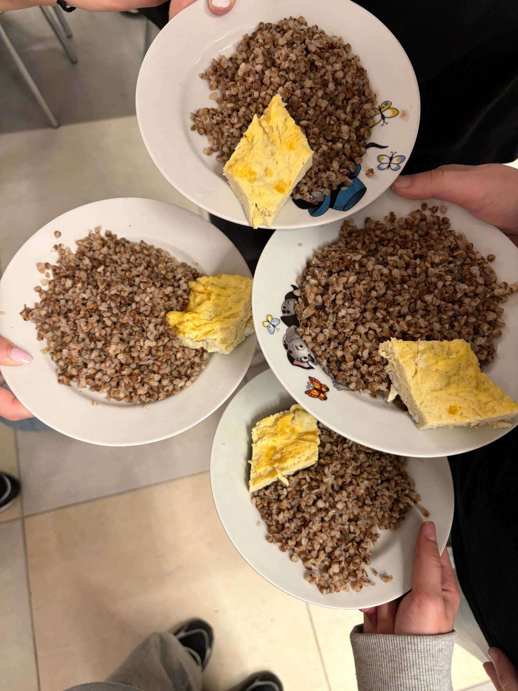
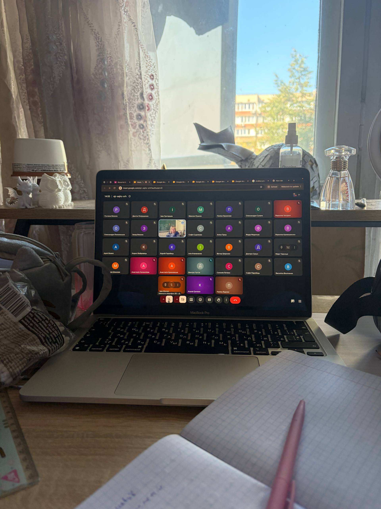
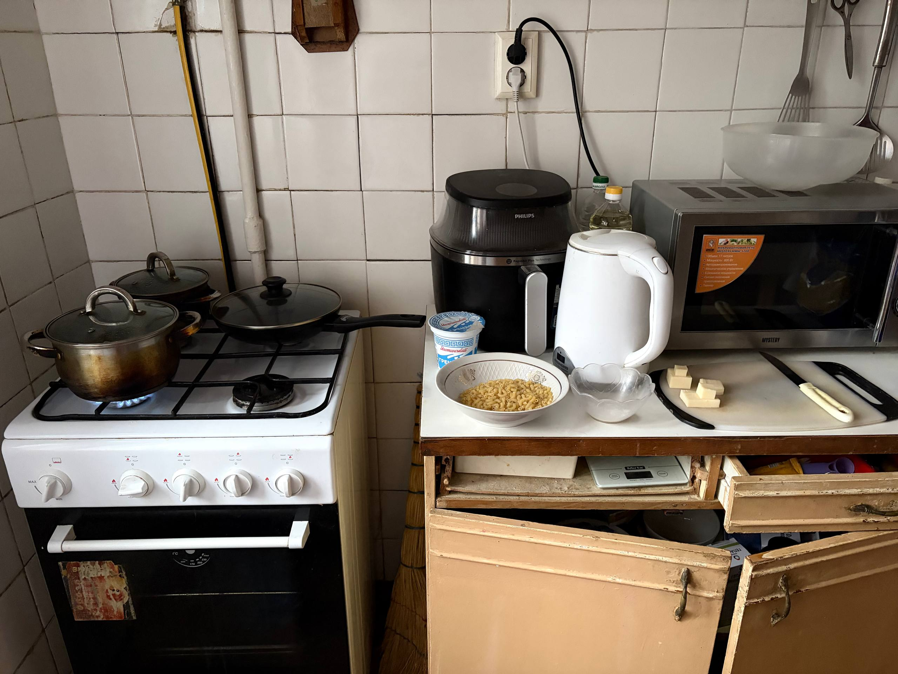

Понеділок — п'ятниця

З понеділка по п'ятницю я ходжу до школи. У мене шестиденний навчальний тиждень, тому в суботу теж є уроки, але вони проходять онлайн.
Мій ранок
- Прокинутися
- Вмитися та поснідати
- Зібрати рюкзак
- Піти до школи
Після школи
Після школи я приходжу додому, обідаю та трохи відпочиваю. Потім починаю робити домашні справи та уроки.
- Зробити домашнє завдання
- Приготувати їсти
- Прибрати кімнату
- Допомогти вдома
- Відпочити
Англійська мова
Після основних справ я займаюся англійською мовою. Я вчу нові слова, виконую завдання та практикую граматику.
Програмування
У вільний час я займаюся програмуванням. Мені подобається створювати сайти та писати код.
Субота

У суботу я не йду до школи, але в мене є онлайн-уроки. Після них я вже можу займатися своїми справами.
- Прокинутися
- Поснідати
- Підключитися до онлайн-уроків
- Зробити домашнє завдання
- Зайнятися програмуванням
- Відпочити
Неділя — мій вихідний

Неділя — мій повністю вільний день. У цей день немає школи, тому я можу відпочити та провести час за улюбленими заняттями.
Що я роблю в неділю
- Пізніше прокидаюся
- Снідаю
- Прибираю кімнату
- Допомагаю з домашніми справами
- Готую їсти
- Займаюся програмуванням
- Граю або дивлюся фільми
- Проводжу час із друзями та котами
Підсумок
Мій тиждень досить насичений. У будні я ходжу до школи, у суботу маю онлайн-уроки, а неділя є моїм головним днем для відпочинку.